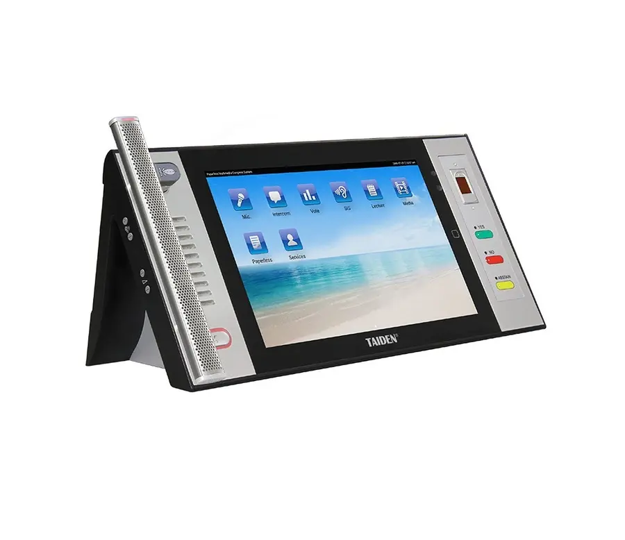

TAIDEN HCS-8300
Система TAIDEN HCS-8300 оснащена ультратонкими пультами 3 поколения, снабженными 14- дюймовым экраном и 8-мегапиксельной камерой. В дополнение к стандартным возможностям конгресс-системы пульты предназначены для работы в режиме «безбумажной конференции» (поддержка всех форматов файлов, функция «электронный суфлер», просмотр видео, выход в интернет)